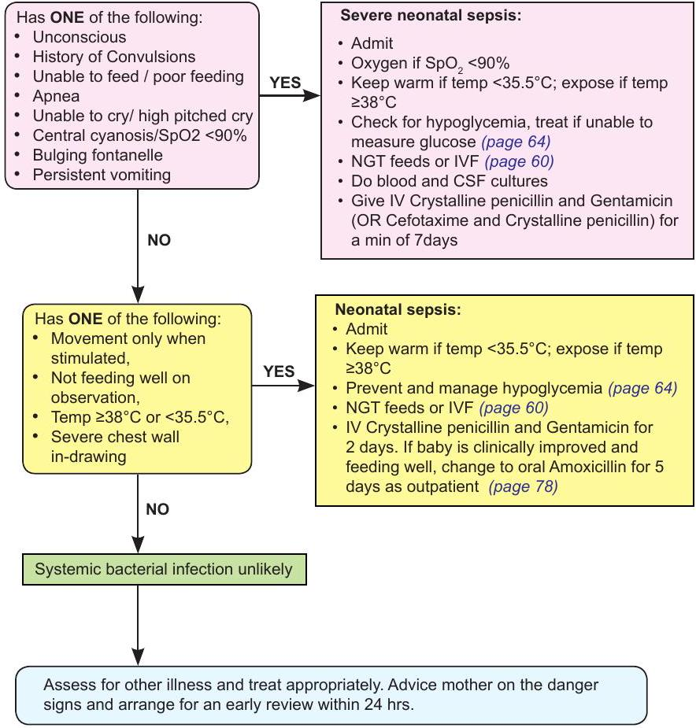

Newborn Care (Part 3): Apnoea, CPAP & Sepsis
Apnoea of Prematurity (AOP)
Continuous Positive Airway Pressure (CPAP)
Neonatal Sepsis
Age <60days
For severe neonatal sepsis or neonatal sepsis:
- Flucloxacillin and Gentamicin is preferred in:
- Suspected staphylococcal septicaemia
- Neonates with signs of sepsis and also has extensive skin pustules/abscess/omphalitis
- If necrotizing enterocolitis is suspected, add Metronidazole
Duration of treatment for neonatal sepsis
| Problem | Days of treatment |
|---|---|
| Signs of neonatal infection in a baby breastfeeding well. | - IV Antibiotics could be stopped after 48 hours if all the signs of possible sepsis have resolved and the child is feeding well and LP, if done, is normal. - Give oral treatment to complete 5 days in total. Advise the mother to return with the child if problems recur. - Review the child after 48 hours. |
| Skin infection with signs of generalized illness such as poor feeding | - IV / IM antibiotics could be stopped after 72 hours if the child is feeding well without fever and has no other problem and LP, if done, is normal. - Oral antibiotics should be continued for a further 5 days. |
| Clinical or radiological pneumonia. | - IV / IM antibiotics should be continued for a minimum of 5 days or until completely well for 24 hrs . - For positive LP see below |
| Severe Neonatal Sepsis | - The child should have had an LP. - IV / IM antibiotics should be continued for a minimum of 7 days or until completely well if the LP is clear |
| Neonatal meningitis or severe sepsis and no LP performed | - IV / IM antibiotics should be continued for a minimum of 14 days. - If Gram negative meningitis is suspected treatment should be IV for 3 weeks. |
Antibiotic prophylaxis
- Antibiotic prophylaxis (Crystalline Penicillin and Gentamicin standard dose) should be given as soon as possible after birth to all newborns (term and preterms) with any one of the following risk factors:
- Prolonged Rupture of Membranes (PROM) >18 hours
- A mother with fever (Temperature $>38^{\circ} \mathrm{C}$)
- Suspected or confirmed chorioamnionitis
- Mother being treated for sepsis at any time during labour or in the last 24 hours before and after birth.
- Treatment should be given for 48-72 hours (at least 4 doses of Penicillin +2 doses of Gentamicin) and may be stopped if the baby has remained entirely well during this period.
- Where possible initiate laboratory investigations immediately but DO NOT withhold antibiotics.
- If there are no risk factors then DO NOT initiate antibiotics treatment.
- A well baby born preterm <37 wks or Low birth weight with low risk factors does not require antibiotic treatment.
Ophthalmia Neonatorum:
Swollen red eyelids with pus should be treated with a single dose of:
$\checkmark$ Ceftriaxone $50 \mathrm{mg} / \mathrm{kg}$ IM (Max 125 mg ) Or
$\checkmark$ Kanamycin or Spectinomycin $25 \mathrm{mg} / \mathrm{kg}$ (max 75 mg ) IM.
Newborn antibiotic doses
| Weight (kg) | Penicillin (50,000iu/kg) IV/IM 12 hrly |
Ampicillin / Flucloxacillin (50 mg/kg) IV/IM 12 hrly |
Gentamicin (3 mg/kg <2kg, 5mg/kg $\geq$ 2kg) IV/IM 24 hrly |
Ceftriaxone (50 mg/kg) IV/IM 24 hrly |
Metronidazole (7.5 mg/kg) IV 12 hrly |
|---|---|---|---|---|---|
| 1.00 | 50,000 | 50 | 3 | 50 | 7.5 |
| 1.25 | 75,000 | 60 | 4 | 62.5 | 10 |
| 1.50 | 75,000 | 75 | 5 | 75 | 12.5 |
| 1.75 | 100,000 | 85 | 6 | 75 | 12.5 |
| 2.00 | 100,000 | 100 | 10 | 100 | 15 |
| 2.50 | 150,000 | 125 | 12.5 | 125 | 20 |
| 3.00 | 150,000 | 150 | 15 | 150 | 22.5 |
| 4.00 | 200,000 | 200 | 20 | 200 | 30 |
Oral amoxicillin - $50 \mathrm{mg} / \mathrm{kg} /$ dose twice a day ( $100 \mathrm{mg} / \mathrm{kg} / \mathrm{d}$ in two divided doses)